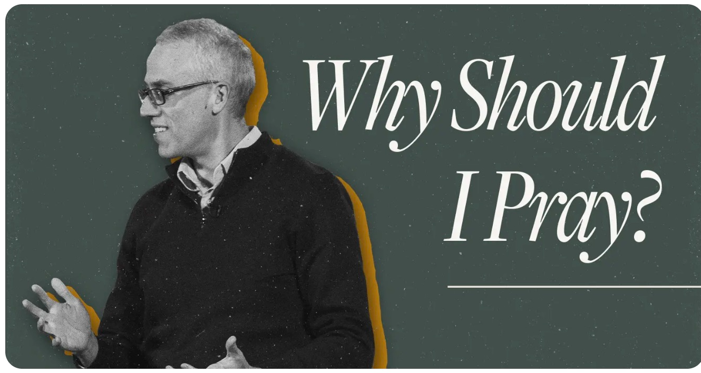

Highlight
2h ago
“We do not pray because the outcome is uncertain. We pray because God has made our asking part of how the certain outcome comes to pass.”
Pair with WSC Q.98 for the men's study — the means are ordained with the end.

Article · Kevin DeYoung